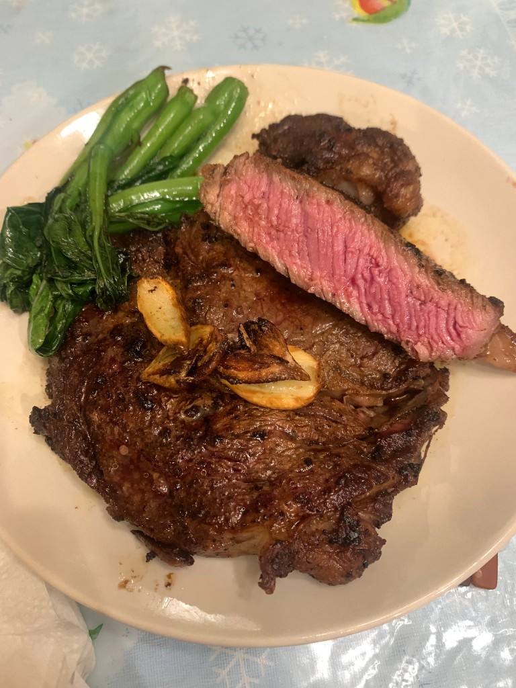

Gaming
I love RPG games. My all-time favorite game is Terraria, but I enjoy other games such as Valorant, Marvel Rivals, and osu!.
I love RPG games. My all-time favorite game is Terraria, but I enjoy other games such as Valorant, Marvel Rivals, and osu!.
Part of the reason why I’m so interested in DSP is the intersection with audio. I use playlists as a way to capture memories and also to encapsulate emotions like joy, love, and even bittersweet nostalgia. Here’s a link to my favorite Spotify playlist:
I’ve also been going to the gym as a way to stay healthy and active in my life. My favorite exercise is barbell squats, and I enjoy playing basketball in my free time.
I’m insanely passionate about cooking and food. As I was growing up my mom inspired me to branch out and cook for myself occasionally. Check below for the three most recent dishes I’ve made!
